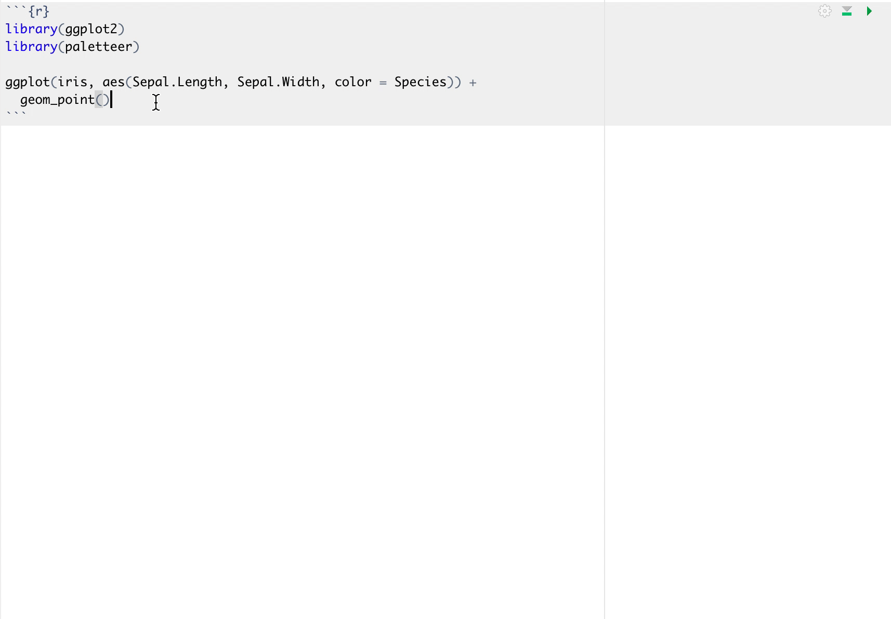
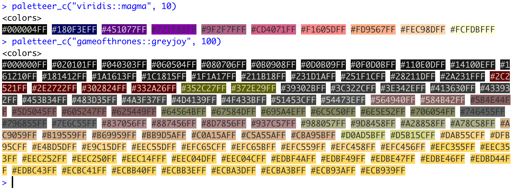
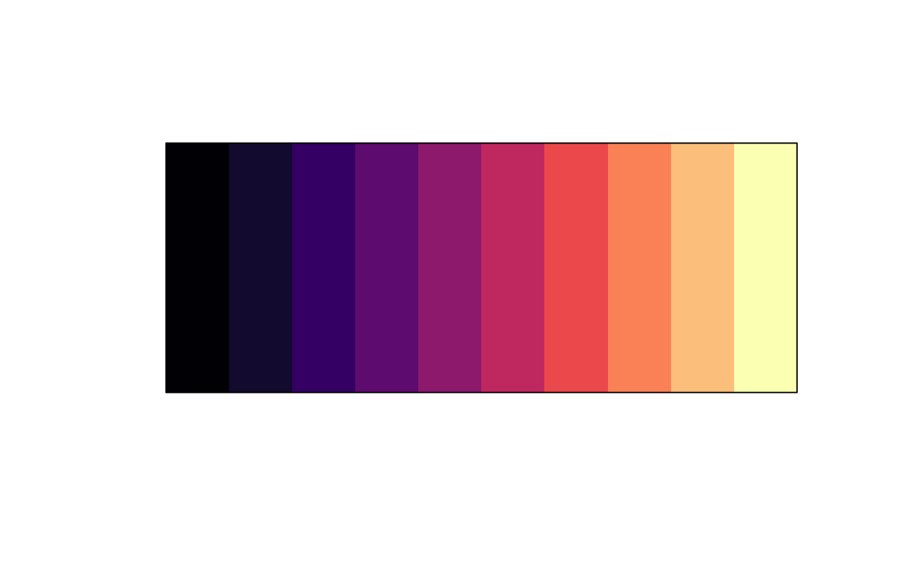

I’m over-the-moon excited to announce the release of version 1.0.0 of paletteer. This version comes with breaking changes and major quality of life improvements. I will unironically name this the “first useable version” for reasons that will be obvious later in this post.
Breaking Changes 💥
There has been a significant change in syntax for this version. For versions <= 0.2.1 the way to specify a palette was done using the arguments package and palette. Both could be taken as both strings or unquoted strings.
# versions <= 0.2.1
paletteer_c("gameofthrones", "baratheon", 10)
paletteer_d(nord, halifax_harbor)While convinient and cool to use NSE, tt was not very useful and I had several people complaining. I realized that using NSE wasn’t a good fit at all for this package. This means that from version 1.0.0 and moving forward only strings will be used to specify palettes.
Secondly, I have eliminated the package argument and from now on all specification is done on the form package::palette
# versions >= 1.0.0
paletteer_c("gameofthrones::baratheon", 10)
paletteer_d("nord::halifax_harbor")The above change is the most likely to break your earlier code.
Autocomplete 🎉
The biggest downside to the original version of paletteer and the later version was the lack of discoverability. Unless you knew the palette you wanted and the EXACT spelling you couldn’t use paletteer. Sure you could browse palettes_c_names and palettes_d_names like some caveman, but to be honest the package felt more like a novelty project than a useful tool.
All of this changes with version 1.0.0 🎉! Simply starting by typing paletteer_d() or any of the other related functions and simply hit tab. This will prompt all the names of available palettes which you then can search through using fuzzy search.

This change is the single biggest improvement to this package.
- Discoverability ✅
- No more missspellings ✅
- Total awesomeness ✅
And yes, it also work with the scale_*_paletteer() functions 🙌

Prismatic integration 💎
You can see from the first gif that the output is a little more colorful then what you are used to. This all comes from the prismatic package I released earlier this year. The prismatic colors objects that are returned from all paletteer functions will be printed with colorful backgrounds provided that the crayon package is available, otherwise, it will just print normally. This is great for when you want to take a quick look at the colors you are about to use. Please note that the background can only take 256 different colors. Some palettes will fit nicely inside these 256 values and will display nicely (viridis::magma) below, while other palettes with a lot of value will show weird jumps in colors (gameofthrones::greyjoy)

If you want more accurate color depictions you can simply plot() the output to see the real colors
plot(paletteer_c("viridis::magma", 10))
plot(paletteer_c("gameofthrones::greyjoy", 100))More color palettes 🌈
It wouldn’t be a paletteer release without more palettes. And this release is no different! This update brings us 654 new palettes!!! from 19 different packages bringing out a total of 1759. I did a little live-tweeting while implementing these packages so you can take a look at the newly included palettes here:
I'll be adding a whole bunch of new palettes to {paletteer} tonight! 🌈
— Emil Hvitfeldt (@Emil_Hvitfeldt) December 8, 2019
Read this thread if you want to see the new colorful goodies coming your way!
❤️💙💚🧡💛💜#rstats pic.twitter.com/c0qK27nc4N
That is all I have for you this time around if you create or find more palette packages please go over and file an issue so they can be included as well. Thank you!
session information
─ Session info ───────────────────────────────────────────────────────────────
setting value
version R version 4.1.0 (2021-05-18)
os macOS Big Sur 10.16
system x86_64, darwin17.0
ui X11
language (EN)
collate en_US.UTF-8
ctype en_US.UTF-8
tz America/Los_Angeles
date 2021-07-16
─ Packages ───────────────────────────────────────────────────────────────────
package * version date lib source
assertthat 0.2.1 2019-03-21 [1] CRAN (R 4.1.0)
blogdown 1.3.2 2021-06-09 [1] Github (rstudio/blogdown@00a2090)
bookdown 0.22 2021-04-22 [1] CRAN (R 4.1.0)
bslib 0.2.5.1 2021-05-18 [1] CRAN (R 4.1.0)
cli 3.0.0 2021-06-30 [1] CRAN (R 4.1.0)
clipr 0.7.1 2020-10-08 [1] CRAN (R 4.1.0)
codetools 0.2-18 2020-11-04 [1] CRAN (R 4.1.0)
colorspace 2.0-2 2021-06-24 [1] CRAN (R 4.1.0)
crayon 1.4.1 2021-02-08 [1] CRAN (R 4.1.0)
DBI 1.1.1 2021-01-15 [1] CRAN (R 4.1.0)
desc 1.3.0 2021-03-05 [1] CRAN (R 4.1.0)
details * 0.2.1 2020-01-12 [1] CRAN (R 4.1.0)
digest 0.6.27 2020-10-24 [1] CRAN (R 4.1.0)
dplyr 1.0.7 2021-06-18 [1] CRAN (R 4.1.0)
ellipsis 0.3.2 2021-04-29 [1] CRAN (R 4.1.0)
emo 0.0.0.9000 2021-07-17 [1] Github (hadley/emo@3f03b11)
evaluate 0.14 2019-05-28 [1] CRAN (R 4.1.0)
fansi 0.5.0 2021-05-25 [1] CRAN (R 4.1.0)
farver 2.1.0 2021-02-28 [1] CRAN (R 4.1.0)
gameofthrones 1.0.2 2020-02-23 [1] CRAN (R 4.1.0)
generics 0.1.0 2020-10-31 [1] CRAN (R 4.1.0)
ggplot2 3.3.5 2021-06-25 [1] CRAN (R 4.1.0)
glue 1.4.2 2020-08-27 [1] CRAN (R 4.1.0)
gridExtra 2.3 2017-09-09 [1] CRAN (R 4.1.0)
gtable 0.3.0 2019-03-25 [1] CRAN (R 4.1.0)
highr 0.9 2021-04-16 [1] CRAN (R 4.1.0)
htmltools 0.5.1.1 2021-01-22 [1] CRAN (R 4.1.0)
httr 1.4.2 2020-07-20 [1] CRAN (R 4.1.0)
jquerylib 0.1.4 2021-04-26 [1] CRAN (R 4.1.0)
jsonlite 1.7.2 2020-12-09 [1] CRAN (R 4.1.0)
knitr * 1.33 2021-04-24 [1] CRAN (R 4.1.0)
lifecycle 1.0.0 2021-02-15 [1] CRAN (R 4.1.0)
lubridate 1.7.10 2021-02-26 [1] CRAN (R 4.1.0)
magrittr 2.0.1 2020-11-17 [1] CRAN (R 4.1.0)
MASS 7.3-54 2021-05-03 [1] CRAN (R 4.1.0)
munsell 0.5.0 2018-06-12 [1] CRAN (R 4.1.0)
paletteer * 1.3.0 2021-01-06 [1] CRAN (R 4.1.0)
pillar 1.6.1 2021-05-16 [1] CRAN (R 4.1.0)
pkgconfig 2.0.3 2019-09-22 [1] CRAN (R 4.1.0)
png 0.1-7 2013-12-03 [1] CRAN (R 4.1.0)
prismatic 1.0.0 2021-01-05 [1] CRAN (R 4.1.0)
purrr 0.3.4 2020-04-17 [1] CRAN (R 4.1.0)
R6 2.5.0 2020-10-28 [1] CRAN (R 4.1.0)
Rcpp 1.0.7 2021-07-07 [1] CRAN (R 4.1.0)
rematch2 2.1.2 2020-05-01 [1] CRAN (R 4.1.0)
rlang 0.4.11 2021-04-30 [1] CRAN (R 4.1.0)
rmarkdown 2.9 2021-06-15 [1] CRAN (R 4.1.0)
rprojroot 2.0.2 2020-11-15 [1] CRAN (R 4.1.0)
sass 0.4.0 2021-05-12 [1] CRAN (R 4.1.0)
scales 1.1.1 2020-05-11 [1] CRAN (R 4.1.0)
sessioninfo 1.1.1 2018-11-05 [1] CRAN (R 4.1.0)
stringi 1.6.2 2021-05-17 [1] CRAN (R 4.1.0)
stringr 1.4.0 2019-02-10 [1] CRAN (R 4.1.0)
tibble 3.1.2 2021-05-16 [1] CRAN (R 4.1.0)
tidyselect 1.1.1 2021-04-30 [1] CRAN (R 4.1.0)
utf8 1.2.1 2021-03-12 [1] CRAN (R 4.1.0)
vctrs 0.3.8 2021-04-29 [1] CRAN (R 4.1.0)
withr 2.4.2 2021-04-18 [1] CRAN (R 4.1.0)
xfun 0.24 2021-06-15 [1] CRAN (R 4.1.0)
xml2 1.3.2 2020-04-23 [1] CRAN (R 4.1.0)
yaml 2.2.1 2020-02-01 [1] CRAN (R 4.1.0)
[1] /Library/Frameworks/R.framework/Versions/4.1/Resources/library